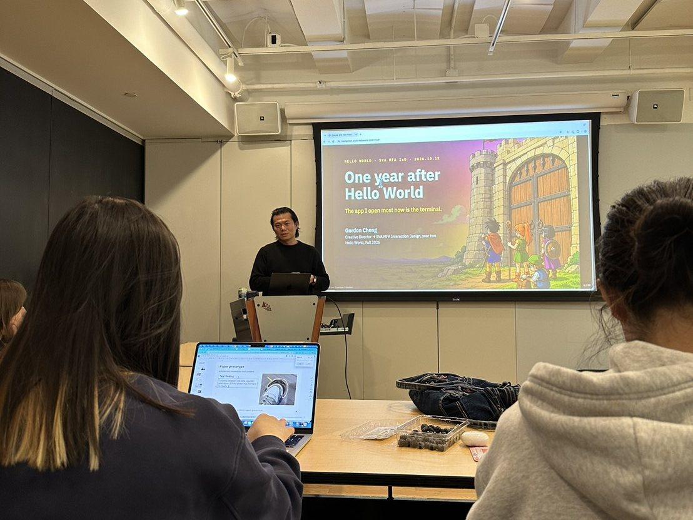
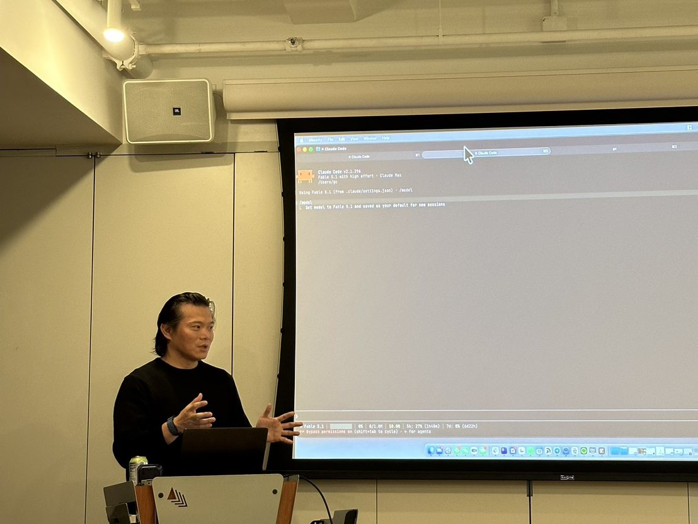
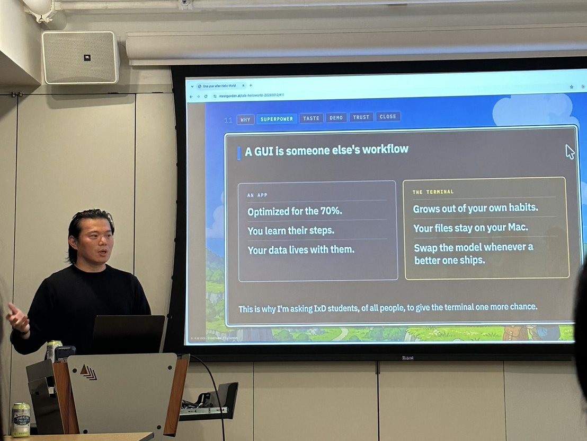

Hello World 一年之後
一年前我剛念 SVA MFA Interaction Design 一年級，正在上系上的入門程式課 Hello World。第一堂課那天晚上，我寫出人生第一支 Python 程式，總共才兩行，第二行就有 bug。
今年我升上二年級了。10 月 12 日那天，和 Bruno Kruse 一起開這門課的 Carrie Kengle 邀請我回到同一個課堂，分享我現在怎麼跟 AI agent 一起工作。直到現在，我還是覺得這件事很不可思議。

苦撐的第一學期
我本來不會寫程式。在廣告業待了好幾年後，我轉來念互動設計，當初選 IxD 有一部分原因就是想離科技近一點。所以 Hello World 這門課對我來說很重要，但每次作業也都寫得很痛苦。
VS Code、IDE、GitHub、pull 和 push，還有 repo 到底是什麼，全都得從頭搞懂，同時還有其他所有課的作業要交。我第一個 GitHub repo 到現在還留著當時的 commit 紀錄，裡頭刪掉了兩個我取錯檔名的檔案，其中一個就叫 for x in range(1,10):.py.py。到了第四週，我們要安裝 Homebrew 跟設定 Python 虛擬環境，那是我第一次在 terminal 面前徹底投降。那幾週我的 README 上寫著「不斷倒帶」，還有一個專案檔案一開頭就寫著「（尚未完成）」。
他們臉上的表情
那個學期我印象最深的，是 Carrie 和 Bruno 在 terminal 裡示範 Claude Code。我那時完全跟不上畫面裡發生什麼事，但我一直記得他們的表情，看起來就像這個世界已經變了。不過他們還是跟我們說，寫程式的邏輯和基本功這些基礎並沒有變。
當下我還聽不懂那是什麼意思，但至少知道有這些東西存在。如果沒在那堂課上看過 terminal 和 Claude Code，我後來根本不會自己去找來用。
寒假那三週
真正的轉變發生在兩個學期之間的三週寒假，從 12 月 25 日到 1 月 14 日。
我先從 Cursor 開始摸索，請 Cursor 幫我安裝並設定好 Claude Code。我連說明文件都沒看，就靠一套工具裝好下一套工具，那是我第一次不必從零開始。
聖誕節凌晨 4 點 54 分，我完成了第一個做給自己用的工具。這支 Chrome 擴充功能可以把同一個問題同時傳送給 Claude、ChatGPT 和 Perplexity，完全沒有人出這份作業給我。兩天後我第一次用 Claude Code，就在同一次對話裡，我請它用中文把整門 Hello World 教過的內容重新講給我聽（像是「變數是裝資訊的盒子」）。我沒有跳過基本功，只是請它用我的母語重教一遍。
到了 1 月中，我做出了找活動的工具，每週一會自動寄信給我，還做了語音備忘錄的整理工具，會照我的課表行事曆把錄音歸檔。這兩個工具到現在都還在跑。那陣子我也在 Twitter 上看到 Ghostty，就這樣一點一點開始待在 terminal 裡生活了。

我跟這屆一年級學弟妹聊的事
我在簡報封面的副標題寫了一句大實話，我現在最常開啟的 app 是 terminal。一年前的我根本無法想像自己會寫出這句話。
下面是我那天想傳達給他們的幾件事。
現在不用再從零開始了。我還是得學會 Carrie 和 Bruno 教我們的邏輯，現在也還是要學架構。以前在真正做出東西之前，得先算很多數學、解很多謎題，AI 幫我省掉的就是這塊。這讓人覺得很公平，同時又覺得很不公平。困難的地方轉移了，但也因為這樣，我做出了很多以前根本不敢嘗試的東西，包括那天晚上用來放簡報的網頁。
一般 app 的工作流程是別人設計好的，我只能照著它的步驟走。但在 terminal 裡，工作流程可以順著我自己的習慣長出來。我的檔案都留在自己的電腦裡，而且每個月哪個模型最強，我就可以隨時換過去用。
一句 prompt 只是起點。LLM 是在預測機率最高的答案，而最可能出現的結果就是平均值。很多公司都在推銷「一句 prompt 就能解決問題」的想法，但對我來說，作品要經過好幾輪來回，不斷決定什麼要留、什麼要改，才會開始有我自己的味道。現在常常是 AI 丟問題給我，由我來回答。這種判斷力就是我的品味，這正是我來念設計研究所要培養的能力，也是我省下時間之後真正花心力的地方。
先備份，再按同意。Agent 會一直跳出來跟你要權限，而且很多時候你還無法判斷該不該給。在讓它進到任何資料夾之前，先把資料夾複製一份。遇到看不懂的要求，先叫它用白話文解釋清楚，再決定要不要放行。只要碰到錢、密碼，或是任何無法復原的操作，一律拒絕。

謝謝 Carrie
這場分享的起點，是一年前在 Carrie 教室裡的那個瞬間。謝謝 Carrie 在世界已經開始變動的時候，還是把我們的基本功教好，也謝謝她邀請我回來。謝謝 Bruno，也謝謝 SVA MFA Interaction Design 陪我走過中間這一年。還要謝謝今年的一年級學弟妹，把禮拜一晚上的那一個小時留給我。
我的最後一頁簡報寫著，現在是自學的時代。工具會一直變，我們也都要繼續自學下去。但我之所以知道該從哪裡開始，全是因為當初在 Hello World 課堂上看過的那一幕。
那天的簡報放在線上的 meetgordon.ai/talk-helloworld-20261012。如果你才剛要起步，或是希望我把這些內容帶到你的課堂或社群，歡迎寫信到 [hi@meetgordon.ai](mailto:hi@meetgordon.ai) 給我。
歡迎所有人把我的 workshop 帶到你們的 community。